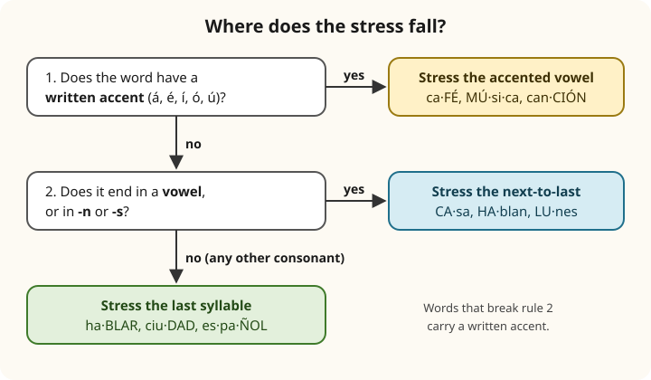

Lesson 1: Sounds, Letters and Stress¶
Los sonidos, las letras y el acento
Spanish is a gift to the learner in one respect: it is written almost exactly as it is spoken. Once you know the sound of each letter and one short set of rules for stress, you can read aloud any Spanish word you meet, even one you have never seen, and spell almost any word you hear. English cannot promise that (think of though, through, tough and cough). This lesson gives you the whole system: the alphabet and the names of the letters, the five pure vowels, the consonants that behave differently from English, and the rules that tell you which syllable to stress and when to write an accent. Take it slowly and use the listen buttons a great deal: good habits formed now will make everything after this easier.
Learning outcomes
By the end of this lesson you will be able to:
- say the names of the letters and spell your name aloud;
- pronounce the five Spanish vowels clearly and without gliding;
- pronounce the consonants that differ from English: b/v, c, d, g, h, j, ll, ñ, qu, r/rr, y, z;
- find the stressed syllable of any written word, and know when a written accent is needed;
- recognise the main differences between the pronunciation of Spain and of Latin America.
1.1 Dialogue: spelling your name¶
Oliver arrives at a small hotel in Granada. The receptionist needs to write his surname, which is not a Spanish name, so she asks him to spell it. Listen, then read along.
- Recepcionista: Buenas tardes. ¿Su nombre, por favor? — Good afternoon. Your name, please?
- Oliver: Oliver Whitfield. — Oliver Whitfield.
- Recepcionista: Perdón, ¿cómo se escribe su apellido? — Sorry, how do you spell your surname?
- Oliver: Uve doble, hache, i, te, efe, i, e, ele, de. — W, H, I, T, F, I, E, L, D.
- Recepcionista: ¿Con hache después de la uve doble? — With an H after the W?
- Oliver: Sí, con hache. — Yes, with an H.
- Recepcionista: Muy bien. ¿Y su correo electrónico? — Very good. And your email address?
- Oliver: Oliver, punto, uve doble, arroba, ejemplo, punto, com. — oliver.w@ejemplo.com
- Recepcionista: Perfecto. Su habitación es la doce. ¡Bienvenido a Granada! — Perfect. Your room is number twelve. Welcome to Granada!
- Oliver: Muchas gracias. — Thank you very much.
Useful words from the dialogue: el nombre [NOHM-breh], first name; el apellido [ah-peh-YEE-doh], surname; ¿Cómo se escribe? [KOH-moh seh ehs-KREE-beh], how is it spelt?; el punto, dot; la arroba [ah-RROH-bah], the @ sign.
How to read the sound guides
Each new word in this book has a sound guide in square brackets, written with English spelling: [ah-peh-YEE-doh]. Syllables are separated by hyphens and the stressed syllable is in capitals. Read ah as in father, eh as in bet, ee as in see, oh as in more (without the r), oo as in food. rr means a rolled r, and th means the th of thin. The guides are only an aid: the recordings are the real model.
1.2 Vocabulary: the alphabet¶
The Spanish alphabet has 27 letters: the 26 of English plus ñ. The names of the letters are feminine (la a, la be), and you need them for spelling names, addresses and email addresses.
| Letter | Name | Sounds like | Example |
|---|---|---|---|
| a | a | [ah] | casa house |
| b | be | [beh] | bueno good |
| c | ce | [theh] Spain, [seh] Latin America | cine cinema, casa house |
| d | de | [deh] | dos two |
| e | e | [eh] | mesa table |
| f | efe | [EH-feh] | foto photo |
| g | ge | [heh] (throaty h) | gato cat, gente people |
| h | hache | [AH-cheh] | hola hello (silent h) |
| i | i | [ee] | sí yes |
| j | jota | [HOH-tah] (throaty h) | jamón ham |
| k | ka | [kah] | kilo kilo |
| l | ele | [EH-leh] | libro book |
| m | eme | [EH-meh] | madre mother |
| n | ene | [EH-neh] | no no |
| ñ | eñe | [EH-nyeh] | España Spain |
| o | o | [oh] | ojo eye |
| p | pe | [peh] | padre father |
| q | cu | [koo] | queso cheese |
| r | erre | [EH-rreh] | pero but, perro dog |
| s | ese | [EH-seh] | sol sun |
| t | te | [teh] | tres three |
| u | u | [oo] | uno one |
| v | uve | [OO-beh] | vino wine |
| w | uve doble | [OO-beh DOH-bleh] | wifi wifi |
| x | equis | [EH-kees] | taxi taxi |
| y | ye | [yeh] | yo I |
| z | zeta | [THEH-tah] Spain, [SEH-tah] Latin America | zapato shoe |
Table 1.1. The alphabet. The letters k and w appear only in words borrowed from other languages.
A few names vary from country to country. V is uve in Spain, but many Latin Americans say ve or ve corta ("short v"), and then call b be larga or be alta to tell them apart. W is uve doble in Spain and doble ve or doble u in much of Latin America. Y has the official name ye, but the older name i griega ("Greek i") is still very common.
ch, ll and rr
Older dictionaries treat ch and ll as separate letters, and you may still see them listed that way. Since 2010 the Spanish academies count them as pairs of letters (digraphs), like rr, and not as letters of the alphabet. They still have their own sounds: ch as in church (chocolate), ll as explained below, and rr always rolled.
1.3 The five vowels¶
English has around a dozen vowel sounds, depending on the accent, and writes them in confusing ways. Spanish has five, and each letter always has the same sound.
| Vowel | Sound | As in English | Examples |
|---|---|---|---|
| a | [ah] | father, but shorter | mamá, casa, hablar |
| e | [eh] | bet | mesa, tres, verde |
| i | [ee] | see, but shorter | sí, libro, mil |
| o | [oh] | more without the r | no, ocho, todo |
| u | [oo] | food, but shorter | uno, luna, azul |
Table 1.2. The five vowels. They are short, clear and never swallowed.
Three habits from English will give you a foreign accent, so watch for them:
- Do not glide. English no is really "noh-oo", and say is "seh-ee". Spanish no is one pure vowel: keep your lips still until the sound ends. Say no, no, no and se, se, se and feel the difference.
- Do not weaken unstressed vowels. In English the unstressed vowels of banana become a vague "uh" (buh-NA-nuh). In Spanish every vowel keeps its full sound: banana is [bah-NAH-nah], three clear a's. Likewise Canadá, chocolate, animal.
- Do not change the vowel before r. The a of English car changes colour before the r; in carta [KAR-tah] the a stays a plain [ah].
Two vowels together¶
The vowels a, e, o are called strong and i, u weak. A weak vowel next to another vowel joins it in the same syllable, making a diphthong:
| Diphthong | Example | Diphthong | Example |
|---|---|---|---|
| ai, ay | aire, hay | ia | familia |
| ei, ey | seis, rey | ie | bien |
| oi, oy | hoy | io | adiós |
| au | auto | ua | agua |
| eu | Europa | ue | bueno |
| iu | ciudad | ui, uy | muy |
Table 1.3. Diphthongs. Each pair is said in one syllable: bien is one syllable, [byehn].
Two strong vowels stay in separate syllables: museo [moo-SEH-oh], idea [ee-DEH-ah], leer [leh-EHR]. A written accent on the weak vowel also splits a diphthong, so the two vowels are said separately: día [DEE-ah], país [pah-EES], río [RREE-oh]. Compare seis (one syllable) with país (two).
1.4 The consonants¶
Most Spanish consonants sound much as they do in English: f, k, l, m, n, p, s, t give no trouble, though p, t and k are said without the small puff of air that follows them in English pin, tin, kin. (Hold a sheet of paper in front of your mouth: it should hardly move when you say papá.) The consonants below need attention.
| Letters | The rule | Examples |
|---|---|---|
| b, v | The same sound. At the start of a phrase and after m or n, a firm [b]; between vowels, a soft [b] with the lips barely touching. | vino, bien, un vaso, uva, Cuba |
| c before a, o, u; qu before e, i | [k]. The u of qu is silent. | casa, cosa, queso, quince |
| c before e, i; z | [th] in most of Spain, [s] in Latin America, the Canary Islands and parts of southern Spain. | cinco, gracias, zapato, azul |
| ch | [ch] as in church. | chico, noche |
| d | At the start and after n or l, [d] with the tongue against the teeth; between vowels and at the end of a word, soft, like the th of this. | dos, nada, ciudad, Madrid |
| g before a, o, u; gu before e, i | Hard [g], as in go; soft between vowels. The u of gu is silent. | gato, amigo, guitarra, guerra |
| g before e, i; j | A throaty [h], like ch in Scottish loch; softer, like English h, in much of Latin America. | gente, girar, jamón, hijo |
| gü | [gw]: the two dots tell you to say the u. | pingüino, bilingüe |
| h | Always silent. | hola, hora, ahora |
| ll, y | [y] as in yes for most speakers; [sh] or [zh] in Argentina and Uruguay. Y alone, or at the end of a word, is the vowel [ee]. | llamo, calle, yo, y, muy |
| ñ | [ny], like the ny of canyon. | año, mañana, niño |
| r | One quick tap of the tongue, like the tt of American better. | pero, caro, hablar |
| rr, and r at the start of a word or after l, n, s | A rolled r: several fast taps. | perro, rojo, Enrique, alrededor |
| x | [ks] between vowels; often [s] before a consonant. In México, Oaxaca and a few other names, it is the throaty [h] of j. | taxi, examen, extra, México |
Table 1.4. The consonants that differ from English.
The rolled r¶
The rolled r is the sound learners worry about most. It matters, because it can change the meaning of a word:
- pero (but) and perro (dog)
- caro (expensive) and carro (car, in Latin America)
- cero (zero) and cerro (hill)
To find the single tap, say the English phrase put it on quickly, American-style: the t in the middle is almost exactly a Spanish r, so "pot-a" becomes para. For the roll, relax the tip of your tongue just behind your upper teeth and blow so that it flutters. Practising with a d in front helps: d-rrr, then ropa, rápido, arroz. If you cannot roll it yet, do not give up speaking: use a strong single tap, and keep practising a few seconds a day. Many native speakers took years as children too.
Common mistake: pronouncing the h
The h is always silent: hotel is [oh-TEHL], hospital is [ohs-pee-TAHL], hay sounds exactly like ay. The breathy h-sound of English is written j (or g before e and i) in Spanish: jardín [har-DEEN], garden.
Spelling follows sound
Because c, g and z change sound before e and i, Spanish changes the spelling to keep the sound the same when a word changes. The [k] sound is ca, que, qui, co, cu; the [g] sound is ga, gue, gui, go, gu; the [th] or [s] sound of z is za, ce, ci, zo, zu. So lápiz (pencil) becomes lápices in the plural, and chico becomes chiquito. You will see this again and again.
1.5 Stress and the written accent¶
Every Spanish word of more than one syllable has one stressed syllable, said a little louder and longer. Stress can change meaning: papa [PAH-pah] is a potato (in Latin America) or the Pope, but papá [pah-PAH] is dad. Fortunately, the spelling always tells you where the stress goes. There are three rules.

Rule 1. A word that ends in a vowel, -n or -s is stressed on the next-to-last syllable:
- casa [KAH-sah], hablan [AH-blahn], lunes [LOO-nehs], amigo [ah-MEE-goh], tomate [toh-MAH-teh]
Rule 2. A word that ends in any other consonant is stressed on the last syllable:
- hablar [ah-BLAR], ciudad [syoo-DAHD], español [ehs-pah-NYOHL], reloj [rreh-LOH]
Rule 3. A word that breaks rules 1 and 2 carries a written accent on the stressed vowel. The accent is always the acute accent (´), slanting up to the right:
- café, sofá, canción, inglés: they end in a vowel, n or s, but are stressed on the last syllable.
- lápiz, árbol, fácil, césped: they end in another consonant, but are stressed on the next-to-last.
- música, teléfono, sábado, miércoles, rápido: words stressed three or more syllables from the end always have a written accent, whatever their last letter.
Read the rules in reverse and they also tell you how to spell: if you hear the stress where rules 1 and 2 put it, write no accent; if you hear it anywhere else, write an accent on that vowel.
Worked example: why inglés loses its accent in inglesa
- inglés is said [een-GLEHS], stressed on the last syllable. It ends in -s, so rule 1 would put the stress on in-. The real stress breaks the rule, so it needs an accent: inglés.
- inglesa is said [een-GLEH-sah]. The stress has not moved, but there is now an extra syllable. It ends in a vowel and is stressed on the next-to-last syllable, exactly as rule 1 expects. No accent: inglesa.
- The same reasoning explains canción → canciones and alemán → alemana, and, the other way round, joven → jóvenes: the plural adds a syllable, so the stress is now three from the end and needs an accent.
Accents that tell words apart¶
A handful of short words carry an accent only to distinguish them from another word spelt the same way. The pronunciation is the same; the meaning differs.
| With accent | Meaning | Without accent | Meaning |
|---|---|---|---|
| tú | you | tu | your |
| él | he | el | the |
| sí | yes | si | if |
| mí | me (after a preposition) | mi | my |
| té | tea | te | you, yourself (object) |
| sé | I know | se | himself, herself |
| más | more | mas | but (literary) |
| qué, cómo, dónde | what? how? where? | que, como, donde | that, as, where (not a question) |
Table 1.5. Accents that distinguish meaning.
Question words always carry the accent, in direct and indirect questions: ¿Dónde vives? (Where do you live?), No sé dónde vive. (I don't know where he lives.) Capital letters keep their accents too: Ángel, Óscar, ÁFRICA.
Common mistake: leaving accents out
An accent is part of the spelling, not an optional extra. papa and papá, esta (this) and está (is), hablo (I speak) and habló (he spoke) are different words. On a phone, hold down the vowel to get the accented letter; on a computer, set up a Spanish or "US International" keyboard.
Punctuation: ¿ and ¡¶
Questions and exclamations are marked at both ends: ¿Cómo estás?, ¡Qué bonito! The opening mark goes where the question or exclamation begins, which is not always the start of the sentence: Y tú, ¿de dónde eres? In speech, a yes/no question is shown only by the rising tune of the voice: Hablas español. (You speak Spanish.) ¿Hablas español? (Do you speak Spanish?)
1.6 Practice¶
Read aloud¶
Read each word aloud before you press the listen button, then compare. Look first for the stress, using the three rules.
| Word | Stressed syllable | Meaning |
|---|---|---|
| ventana | ven-TA-na | window |
| universidad | u-ni-ver-si-DAD | university |
| examen | e-XA-men | exam |
| jardín | jar-DÍN | garden |
| azúcar | a-ZÚ-car | sugar |
| pájaro | PÁ-ja-ro | bird |
| profesor | pro-fe-SOR | teacher |
| gracias | GRA-cias | thank you |
Table 1.6. Find the stressed syllable. Switch on Practice to hide the answers.
Tongue twisters¶
Spanish speakers use trabalenguas, "tongue-tanglers", to practise difficult sounds. Here are two traditional ones.
- Erre con erre, cigarro; erre con erre, barril. Rápido ruedan los carros cargados de azúcar del ferrocarril. — R with r, cigar; r with r, barrel. Fast roll the wagons loaded with sugar of the railway. (The rolled r.)
- Tres tristes tigres tragaban trigo en un trigal. — Three sad tigers were swallowing wheat in a wheat field. (The tapped r after t.)
Spelling aloud¶
- ¿Cómo se escribe tu nombre? — How do you spell your name?
- ¿Se escribe con be o con uve? — Is it spelt with a b or a v? (See Exercise 9.)
- Jota, o, ese, e. José, con acento en la e. — J, O, S, E. José, with an accent on the e.
- Ele, o, pe, e, zeta. López, con acento en la o. — L, O, P, E, Z. López, with an accent on the o.
When spelling, say con acento or con tilde for a written accent (both are used; tilde is the technical word), mayúscula for a capital letter and minúscula for a small one.
Say it
Spell your own first name and surname aloud, letter by letter, as Oliver did. Then say these five words, paying attention to the vowels and the r: pero, perro, caro, carro, ahora.
1.7 Culture: one language, many accents¶
Spanish is the official language of Spain, Mexico, most of Central and South America, Cuba, the Dominican Republic, Puerto Rico and Equatorial Guinea, and it is spoken by millions of people in the United States. By most counts it is the second most widely spoken native language in the world, after Mandarin Chinese. It goes by two names: español and castellano (Castilian, after Castile, the kingdom in which it grew up). Both are correct. Castellano is often preferred in Spain, where Catalan, Galician and Basque are also spoken, and in several South American countries; español is usual in Mexico and elsewhere.
Two ways to say cinco. The most noticeable difference between Spain and Latin America is the letter z, and c before e and i. Most speakers in central and northern Spain distinguish casa (house) from caza (hunting): the second has a th sound. All Latin Americans, Canary Islanders and many Andalusians say both with an [s], which is called seseo. Both pronunciations are standard and correct, so choose one and be consistent. The idea that the Spanish th comes from a king with a lisp is a popular myth; it is the result of ordinary sound changes over centuries.
Other differences you will hear.
- ll and y. Nearly everywhere they sound the same, [y]. In Argentina and Uruguay both sound like English sh or the s of pleasure: yo me llamo sounds like "sho meh SHAH-moh".
- s at the end of a syllable. In the Caribbean, much of the coast of Latin America, Andalusia and the Canary Islands, it is often softened to a breath, [h], or dropped: los dos may sound like "loh doh".
- j. In Spain, the j is a strong, rasping sound; in Mexico, Colombia and the Caribbean it is often a soft [h].
None of this should worry you. Educated speakers from Madrid, Mexico City, Bogotá and Buenos Aires understand each other without difficulty, just as speakers from London, Texas and Sydney do. The sounds this book gives are understood everywhere.
The academies. Spanish has an official referee for spelling and grammar: the Real Academia Española (RAE), founded in Madrid in 1713, which today works together with the academies of the other Spanish-speaking countries in the Association of Academies of the Spanish Language (ASALE). Their dictionary and spelling rules are freely available online, and they are the source for the alphabet in this lesson.
The ñ. The letter ñ began in medieval manuscripts as a small n written above another n, to save space; the wavy line is the remains of that n. Today it is a symbol of the language itself, and Spanish speakers have defended it whenever keyboards and computer systems threatened to leave it out.
1.8 Summary¶
Summary
- Spanish is written as it is spoken. The alphabet has 27 letters: the English 26 plus ñ. ch, ll, rr are pairs of letters with their own sounds.
- There are five vowels, always short and pure: a, e, i, o, u. Never glide and never reduce an unstressed vowel to "uh".
- b = v; h is silent; j and g before e, i are a throaty h; ll and y sound like y (sh in Argentina); ñ is ny; r is a tap and rr a roll; c before e, i and z are th in most of Spain and s in Latin America.
- Stress: words ending in a vowel, -n or -s are stressed on the next-to-last syllable; words ending in another consonant on the last; a written accent marks every exception and every word stressed three syllables from the end.
- Accents also distinguish words (tú / tu, sí / si, él / el) and mark question words (qué, dónde, cómo).
- Questions and exclamations open with ¿ and ¡.
1.9 Exercises¶
Exercise 1
How many letters does the Spanish alphabet have?
Answer
27. The 26 letters of English plus ñ.
Exercise 2
Which letter of the Spanish alphabet is always silent?
Answer
h. hola, hotel, ahora: the h is never pronounced.
Exercise 3
Underline (or say) the stressed syllable: comer, comen, comedor.
Answer
co-MER (ends in r: last syllable), CO-men (ends in n: next-to-last), co-me-DOR (ends in r: last syllable).
Exercise 4
One of these words needs a written accent. Which one? arbol, mesa, papel.
Answer
árbol. It is stressed on ár-, the next-to-last syllable, but ends in -l, so rule 2 would put the stress on the last syllable. The accent marks the exception. mesa and papel follow the rules.
Exercise 5
The word telefono is stressed on the second syllable, -le-. Write it correctly.
Answer
teléfono. teléfono: stressed three syllables from the end, so it always has an accent.
Exercise 6
Is the g in gente hard, like English go, or throaty, like the Spanish j?
Answer
throaty. Before e and i, g sounds like the Spanish j. For a hard g before e or i, Spanish writes gu: guerra, guitarra.
Exercise 7
How many syllables are there in bueno, in día and in museo?
Answer
bueno: two (bue-no, ue is a diphthong). día: two (dí-a, the accent splits the vowels). museo: three (mu-se-o, e and o are both strong).
Exercise 8
Spell the name Gutiérrez aloud, using the names of the letters.
Answer
Ge, u, te, i, e con acento, erre, erre, e, zeta. You can also say doble erre for rr.
Exercise 9
In Spanish, vaca (cow) and baca (roof rack) sound exactly the same. Why do Spanish speakers often ask ¿con be o con uve? when spelling?
Answer
Because b and v have the same sound, a listener cannot tell from the sound which letter a word has, so the speller has to say it. The same happens with silent h: ¿con hache o sin hache?
Exercise 10
Choose the right word for each meaning: (a) Yes, I'm English: si / sí; (b) your name: tu / tú; (c) the book: el / él.
Answer
(a) sí; (b) tu; (c) el.
1.10 Quiz¶
Quiz: sounds, letters and stress
Exercise 11
Which word has a silent letter?
- hora
- gato
- mesa
- taxi
Answer
hora
The h is always silent in Spanish.
Exercise 12
In which word is the r rolled?
- pero
- caro
- perro
- hablar
Answer
perro
rr is always rolled; a single r between vowels is one tap.
Exercise 13
Where is the stress in ciudad?
- ciu-
- -dad
Answer
-dad
It ends in d, a consonant other than n or s, so the stress falls on the last syllable.
Exercise 14
Write correctly, with its accent: musica
Answer
música
Stressed three syllables from the end, so it always carries an accent.
Exercise 15
The name of the letter ñ is ___.
Answer
eñe
Exercise 16
Match each letter to its Spanish name.
| A | B |
|---|---|
| h | uve |
| j | zeta |
| v | hache |
| z | jota |
Answer
h — hache; j — jota; v — uve; z — zeta
Exercise 17
Tap the word that is missing its written accent.
El cafe es para mi madre.
Answer
Wrong word: cafe.
Corrected: El café es para mi madre.
café ends in a vowel but is stressed on the last syllable, so it needs an accent. mi (my) has no accent.
Exercise 18
Put the words in order: "How do you spell your surname?" (polite)
Words: se / apellido? / su / ¿Cómo / escribe
Answer
¿Cómo se escribe su apellido?
Exercise 19
Write what you hear.
Dictation. Have someone read the sentence aloud, then write it down.
El perro de mi amigo se llama Rayo.
Answer
El perro de mi amigo se llama Rayo.
Exercise 20
Say it aloud, rolling the r of the second word.
Pero el perro es caro.
Answer
Say: Pero el perro es caro.